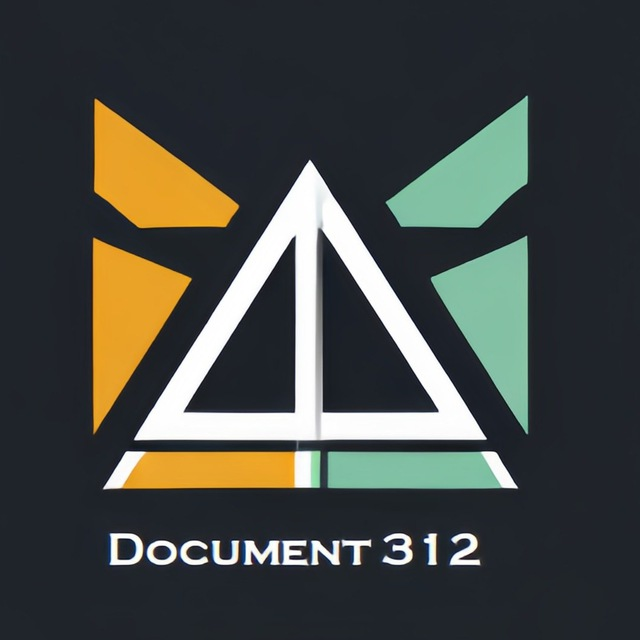

Лендинги
Создание одностраничных сайтов под ключ: адаптивно, быстро, с акцентом на конверсию.
Разработка лендингов и Telegram-ботов
Создаю аккуратные, быстрые и конверсионные лендинги и надёжные Telegram-боты — от идеи до внедрения.
Создание одностраничных сайтов под ключ: адаптивно, быстро, с акцентом на конверсию.
Разработка ботов любой логики (кроме интеграции платёжных систем). Автоматизация, уведомления, CRM-связки.
Поддержка, доработки и консультации по сайту/ботам, быстрое решение срочных задач.
Этот бот нужен для быстрой и удобной продажи вашей мебели и техники. Он оценивает товар по фото в режиме 24/7 и сразу присылает цену, а также даёт доступ к каталогу магазина и поддержке. Всё управляется кнопками в Telegram, экономя ваше время.
Этот бот помогает студентам заказывать печать документов и оформление работ по ГОСТ. Он принимает файлы, учитывает сроки и пожелания, а затем отправляет заявки в службу исполнения, упрощая процесс оформления учебных работ.
Этот бот предназначен для подготовки к экзамену по медицинской документации. Он генерирует индивидуальные билеты с вопросами и задачами, проверяет знания и предоставляет обратную связь. Бот помогает систематизировать изучение материала и закреплять ключевые понятия дисциплины.

Рекламный сайт стартапа Level AI.

Сайт рассказывающий историю любви.
Я — Александров Руслан, разработчик лендингов и Telegram-ботов с опытом более двух лет. Специализируюсь на создании современных и стильных digital-решений для предпринимателей и стартапов, которым важны эстетика, удобство и первое впечатление.
В работе уделяю особое внимание деталям: структуре, типографике, анимациям и логике взаимодействия. Люблю нестандартные задачи и всегда стремлюсь находить решения, которые делают продукт уникальным. Постоянно развиваю навыки и экспериментирую с новыми подходами, чтобы каждое новое решение было лучше предыдущего.
Мой стиль — это баланс премиального визуала и функциональности. Все проекты выполняю полностью «под ключ»: от идеи и концепции до реализации и поддержки. Работаю самостоятельно, что позволяет контролировать качество на каждом этапе и создавать результат, которым действительно можно гордиться.
Если вам нужен сайт или бот, который выделит ваш проект и подчеркнёт его индивидуальность — буду рад помочь.
Это игра, которая обучает людей основам алгоритмизации посредством игрового процесса.
Мои роли: Аналитик, Экономист, Креативщик.
Приложение для портативного и эргономичного устройства, позволяющие повышать мотивацию пациентов на реабилитации за счет расширения возможности его использования в качестве джойстика или мышки для широкого спектра игр и процесса работы на ПК
Моя роль: Frontend-разработчик